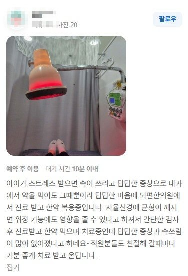

이런 증상이 있나요? | 1분 체크
- 잠드는 데 오래 걸리거나 새벽에 자주 깹니다.
- 자다가 두근거리고 다시 잠들기 어렵습니다.
- 잠을 자도 개운하지 않고 낮에 피곤합니다.
- 잠을 못 잘까 봐 침대에 누우면 더 긴장됩니다.
위 체크리스트는 자가진단이 아니라 진료 상담을 돕기 위한 참고 문항입니다.
어떤 질환인가요? 주요 증상
불면증은 잠을 시작하거나 유지하기 어려워 일상생활에 지장을 주는 상태입니다. 단기간의 스트레스성 불면과 만성 불면은 평가와 관리가 다를 수 있습니다.
원인과 악화 요인
스트레스, 불규칙한 수면, 카페인·음주, 통증, 수면무호흡증, 우울·불안, 일부 약물이 원인이 될 수 있습니다. 심장 두근거림이 있다고 모두 자율신경실조증인 것은 아니므로 심혈관·갑상선 등 다른 요인도 확인해야 합니다.
검사와 감별이 필요한 경우
수면시간·각성 횟수·낮 활동, 코골이, 복용약을 확인합니다. 만성 불면에서는 불면증 인지행동치료(CBT-I)가 핵심 표준 접근이며, 필요 시 수면의학 전문 진료를 안내합니다.

강남뇌편한의원의 진료 및 치료 방향
한의학+미국 정골의학+통합의학3가지 관점으로 만성 뇌신경질환·자율신경질환을 진료합니다
수면일지, 두근거림·소화불편·긴장 상태를 함께 점검하고 개별적으로 침·한약 등 보완 진료의 적합성을 상담합니다. 수면제나 정신건강의학과 처방약은 임의로 끊지 않도록 안내합니다.

생활관리와 경과 확인
기상시간을 일정하게 유지하고 낮잠과 늦은 카페인을 조절하세요. 잠이 오지 않는 상태로 오랫동안 침대에 머무는 습관은 전문가의 행동치료 지침에 맞춰 조정할 수 있습니다.
자율신경실조증 치료 후기



환자분이 직접 작성하신 후기이며, 치료 결과와 경과는 개인마다 다를 수 있어 모든 분께 같은 효과를 보장하지 않습니다.
자주 묻는 질문 | Q&A
심전도가 정상인데 자다가 두근거릴 수 있나요?
가능합니다. 다만 반복되는 두근거림은 부정맥·갑상선·불안 등 원인 평가가 필요할 수 있습니다.
수면제를 먹고 있어도 상담할 수 있나요?
네. 복용약과 기간을 알리고 병행·상호작용을 확인하세요. 중단이나 감량은 처방 의료진과 결정해야 합니다.
증상이 반복된다면 진료 상담으로 확인해 보세요
한의학 · 미국 정골의학 · 통합의학, 3가지 관점의 진료
증상 시작 시기, 반복되는 상황, 이전 검사 결과, 현재 복용약을 알려주시면 도움이 됩니다.